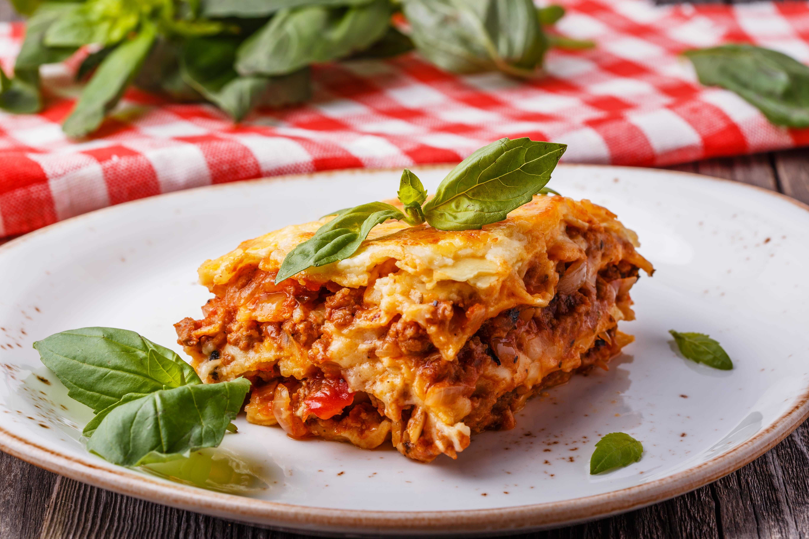

Lasagna

This lasagna recipe takes a little work, but it is so satisfying and filling that it's worth it!
How to Make Lasagna
Lasagna Ingredients
- Meat: 500g lean ground beef
- Onion and garlic:
- 1 onion
- 2 cloves of garlic
- Tomato products:
- 1 can crushed tomatoes
- 2 cans tomatoe sauce
- 2 cans tomatoe paste
- Sugar: 2 tablespoons of white sugar
- Spices and seasonings:
- 4 tablespoons fresh parsley
- 1,5 tablespoons dried basil leaves
- 1,5 tablespoons salt
- 1 tablespoon Italian seasoning
- 0,5 tablespoon fennel seeds
- 0,25 tablespoon black pepper
- Lasagna noodles: 12 lasagna noodles
- Cheeses:
- 100g parmesan
- 250g mozzarella
- 500g ricotta
- Egg: 1 egg
- Water: 0,5 cup water
How to Make Lasagna Step-By-Step
- Make the meat sauce:
- Cook gound beef, onion and garlic over medium heat until well browned
- Stir in crushed tomatoes, tomato sauce, tomato paste and water
- Season with sugar, 2 tablespoons parsley, basil, 1 tablespoon salt, Italian seasoning, fennel seeds and pepper
- Simmer, covered, for about 1,5 hours, stirring occasionally
- Cook the noodles.
- Make the ricotta mixture.
- Combine ricotta cheese with egg
- Stir in 2 tablespoons parsley and 0,5 tablespoon salt
- Layer the lasagna.
- Meat sauce
- Noodles
- Ricotta cheese mixture
- Mozarella cheese
- Repeat
- Parmesan
- Bake the lasagna.
- Preheat the oven at 190C
- Bake in the preheated oven for 25 minutes.
- Cover the lasagna with foil and bake for an additional 25 minutes.
- Rest lasagna for 15 minutes.